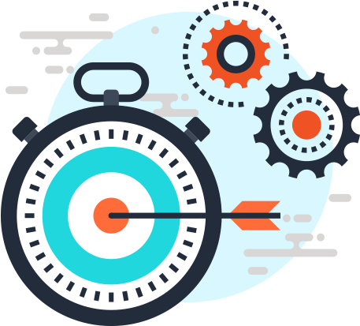
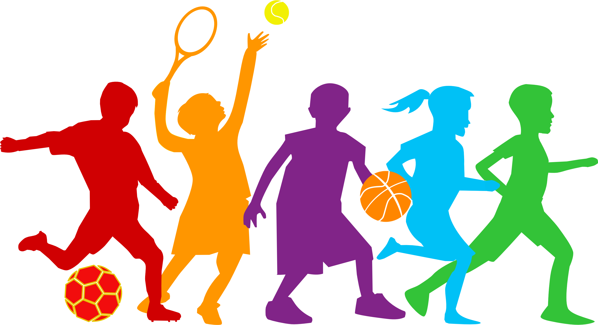
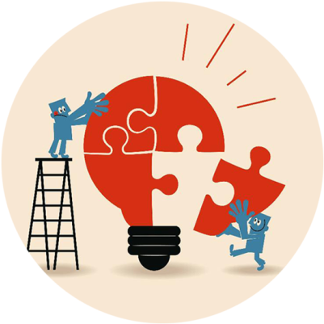
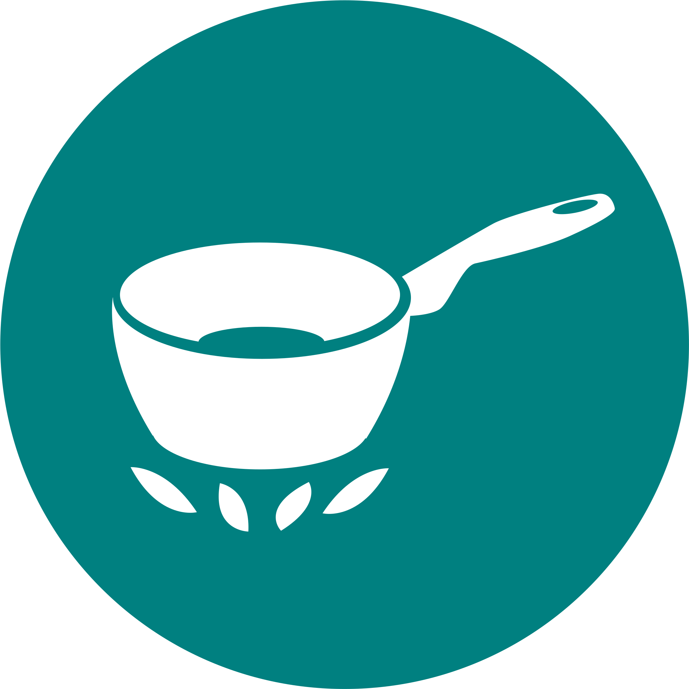

The truth is that we use math all the time! It is pertinent to note how one experiences mathematical applications in daily life from the time one gets up from bed till one goes to bed in the night. Be it a cook or a farmer, a carpenter, a mechanic, a shopkeeper or a doctor, an engineer or a scientist, a musician or a magician, an artist or a tailor, everyone needs math in daily life.
Managing Time
When we get up in the morning, we see the time of waking to verify whether we have enough time to complete various tasks. (Awareness of time, reading a clock/watch, planning one’s routine)
Budgeting
How much is this shirt or blouse going to cost once the 50% sale is applied? What about once the taxes are added? Do you prefer to gather your things and hope for a great deal on the cash counter? Or know the price before heading there. That takes math knowledge and at least a basic understanding of how percentages work.
Sports
Basic knowledge of math also helps keep track of scores for every sports activity. Geometry and trigonometry can help your teens who want to improve their skills in sports. It can help them find the best way to hit a ball, make a basket or run around the track.
Driving
Operating a car or motorcycle is ultimately nothing but a series of calculations viz., How many kilometers needed to reach the destination? How much petrol in the car? How many kilometers per hour am I able to drive? How many kilometers per liter does my car get? Oh no, I’ve hit a traffic jam, and now my pace has slowed, am I still going to make it to work on time? All of these questions are extremely easily answered with basic math skills.
Critical Thinking
Technically ‘critical thinking’ is not even Math as there are no numbers involved. But knowledge of Math surely increases the ability to think critically. The more math skills you gain, the more you observe the minute details, question the available data, rule out unnecessary data and analyze it further for your benefit.
Cooking
The recipe calls for “3 tablespoons” of salt. You only have a teaspoon or a soup spoon. The recipe calls for “2 cups,” but you only have a quarter cup measuring tool and a half cup measuring tool. How much adds up to “2 ”? You may know the answer. But that’s because you understand math, fractions, and conversions.
Follow us